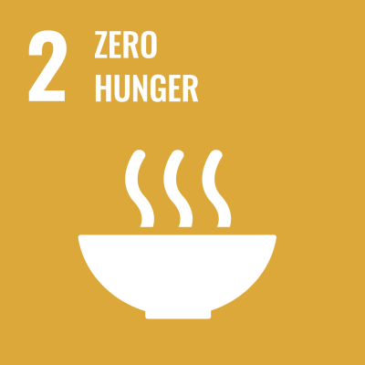
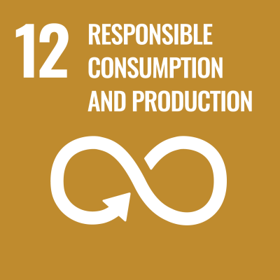
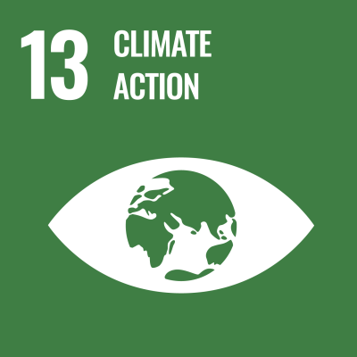

FreshSave
AI that saves food before it's wasted — a nine-model intelligent system for the circular food economy.
9 AI Technologies
4 Pipeline Stages
€0 Total Cost
AtlanTec AI Hackathon 2026 · Human Intelligence Driving Transformative Innovation
Ireland's Food Waste Crisis
25%+
Of global food — wasted
8–10%
Of global GHG emissions
221k
Tonnes — Irish households (2023)
€700
Per household / year
€1.29B
National annual cost
Why It Happens — Four Human Problems
🧊
We Forget
We don't know what's in the back of our fridge until it's too late.
We Forget
We don't know what's in the back of our fridge until it's too late.
📅
We Don't Track
No one mentally tracks when they bought each item or how long it lasts.
We Don't Track
No one mentally tracks when they bought each item or how long it lasts.
🍳
We Don't Know What to Cook
When ingredients are near expiry, we can't think of what meal to make.
We Don't Know What to Cook
When ingredients are near expiry, we can't think of what meal to make.
🗑️
We Just Bin It
When food goes bad, we have no idea there are better options than the bin.
We Just Bin It
When food goes bad, we have no idea there are better options than the bin.
DEMO
See It In Action
Click play or press Space to start the demo video
Building the Ecosystem
FreshSave today is just the beginning. Here's where it's heading.
FreshSave
🛒
Supermarket Integration
Auto-import purchases from your grocery app
⌚
Smartwatch Biometrics
Health data to personalise nutrition & meal plans
💝
Charity Network
Live integration with local food banks & shelters
👋
FreshSave Friends
Share surplus food with friends & neighbours
FreshSave Supports 3 UN Sustainable Development Goals

Redirect edible food to those who need it via verified local charities.

AI-driven freshness scoring and meal planning prevent waste at the source.

Every item diverted from landfill prevents 2.5 kg of CO₂-equivalent methane.
Thank You 💚

Scan to try FreshSave